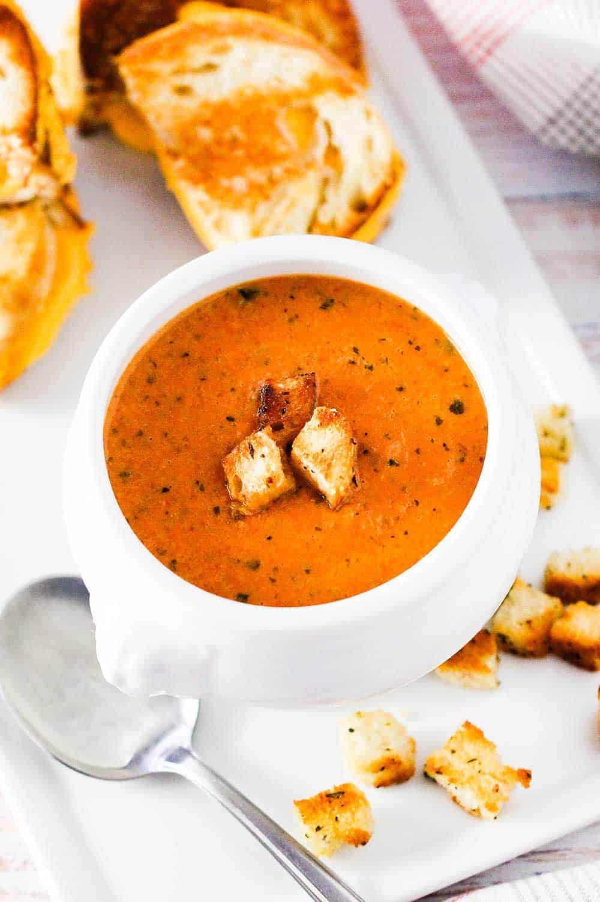

Roasted tomato basil soup

Description
This Roasted Tomato Basil Soup is the ultimate in comfort. Roasting the tomatoes gives the soup a deep, rich flavor. And over-the-top good with grilled cheese sandwiches.
Ingredients
- 9 Roma tomatoes sliced lenghtwise
- 3 tbsp extra virgin olive oil
- 2 tbsp unsalted butter
- 1 yellow onion diced
- 4 garlic cloves minced
- 1 tbsp kosher salt
- 1/2 tsp ground black pepper
- 1 28 oz. can San Marzano tomatoes crushed
- 1 cup basil fresh, roughly chopped
- 1 tbsp sugar
- 2 cups chichen stock
- 2/3 cup heavy cream
Steps
- Preheat oven to 375°F
- Spread tomato halves on a baking sheet. Drizzle with olive oil, and then sprinkle with salt and black pepper
- Roast tomatoes for 1 hour. Remove from oven and set aside
- Heat 2 tbsp oil, or butter, in a large pot (or Dutch oven) over medium-high heat
- Add onion, and saute for about 5 minutes
- Stir in the garlic, thyme, salt, and pepper. Sauté for another minute
- Add crushed tomatoes, basil, and sugar to the pot. Lower the heat and simmer for about 10 minutes
- Add the stock and the roasted tomatoes into the pot. Simmer for 30 minutes, stirring every now and then
- Use an immersion blender to purée the soup, or very carefully transfer to a blender or food processor to purée. This would most likely need to be done in a couple batches. Return the soup to the pot
- Stir in the cream
- To make the mini croutons: Cut a few small pieces of bread in small cubes, add a little oil, diced garlic and basil...bake at 400 for about 7 minutes... these make wonderful croutons!
- Add the croutons to the top of the served soup. Serve at once!